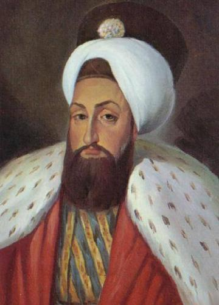

|
 |
III.Selim III. Selim, 24 Aralık 1761 tarihinde babası III. Mustafa'nın saltanatı döneminde dünyaya geldi. Babası 1774 yılında öldüğünde sadece 13 yaşında olduğu için amcası I. Abdülhamit tahta çıktı. I. Abdülhamit şehzade Selim'e kendisinden önceki padişahların tersine, oldukça iyi davrandı. Kafes (oda hapsi) hayatı yaşamasına rağmen Selim'in iyi bir eğitim almasına izin verdi. Şehzade Selim müzik ve edebiyat ilgilendi. Fransa'nın Fransız Devrimi öncesindeki son kralı olan XVI. Louis'le mektuplaştı. Daha tahta çıkmadan Osmanlı Devleti'nde köklü bir yapısal değişikliğe gerek olduğu inancına vardı. I. Abdülhamit 7 Nisan 1789 yılında ölünce, III. Selim Avrupa'yı temelinden sarsacak olan Fransız Devriminin eşiğinde tahta çıktı. |